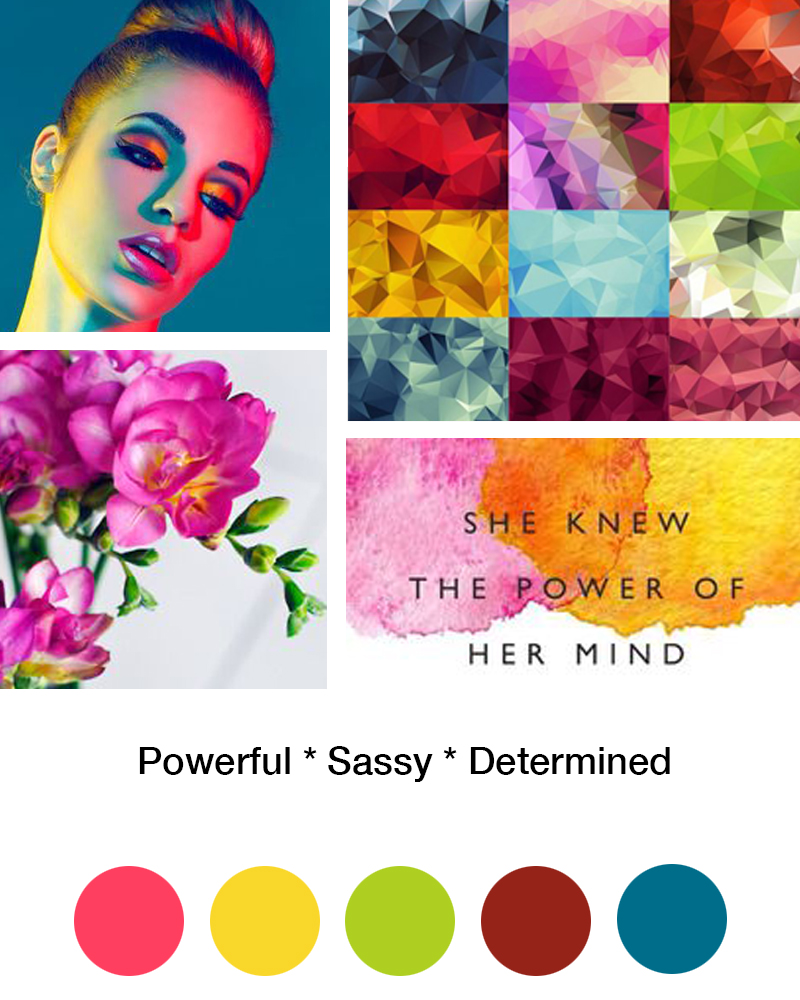
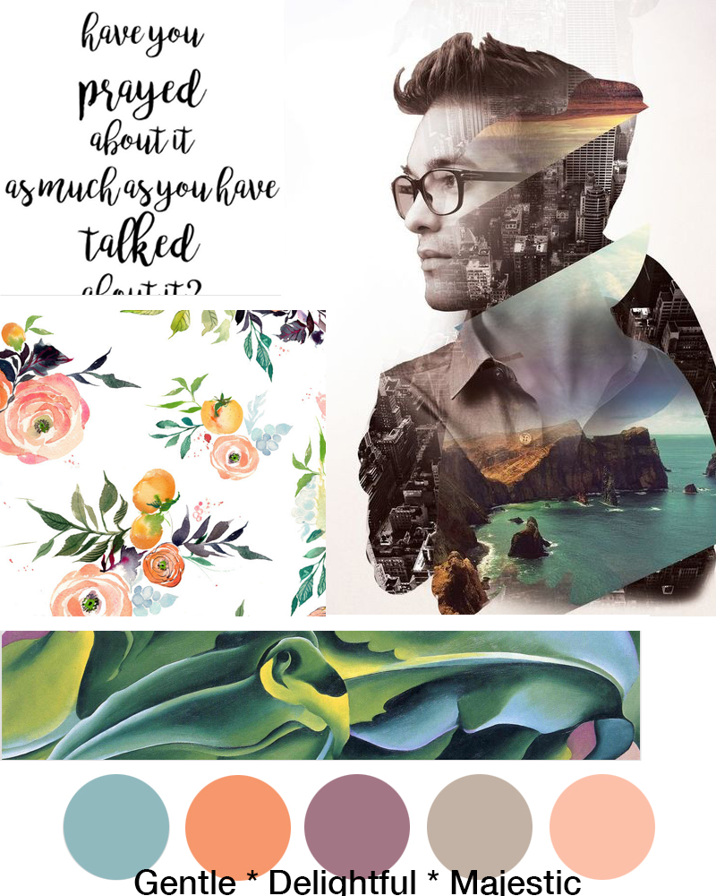

Wireframe

This is my second wireframe sketch. My first one had three columns. I was confused at first, but after the critique, I made changes to it. I felt the hierachy of the wireframe is something similar to pitchfork withought giant images through the body. I kept it simple with a large gif to indicate movement of the artists. I floated the profile to the left to show the reader an introudction of the artists. The video was large to indicated importance.
Moodboards
 The moodboards activity was a great exercise. I've had Pinterest for a few years and heard many artists and designers used it to pull of inspiration. I was able to use my saved images to make a moonboard less than 30 min. I wanted to create two different moodboards my showcasing two sides of my artists. One that is strong with color and another with gray tones. For my next project, I want to create three moodboards for variety and indicate which one is my main color and accent colors.
Production
Project 1: Lindsey StirlingThe process from wireframe, moodboard to HTML + CSS was straight forward. I understand the workflow and really googling many things to figureout what I needed to do. What was easy is centering text and float photos. I had a difficult time with padding qutoe to the left. I decided to leave it off. What was also difficult was figuring out why my index.htmls were overrighting, which took most of my time.
Final Takeaways
Project 1 was fun and it gave my the fundementals to move forward. I admit, the site looks like what I would find on Angelfire, but I'm still proud of it. For future projects, I want to learn how to section my paragraphs. I also want to spend more time asking advice from my classmates.